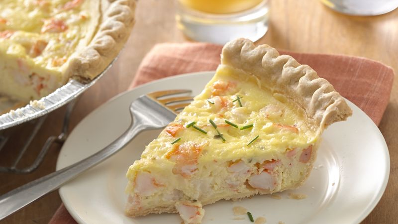

Shrimp Pie

This tasty shrimp and cheese pie makes a perfect light supper, or cut it into smaller wedges for a hearty appetizer.
Ingredients
- 1 crust from 1 package (12 oz) frozen Pillsbury™ Deep Dish Pie Crusts (2 Count)
- 1/2 cup chive-and-onion cream cheese spread (from 8-oz container)
- 4 eggs
- 12 oz frozen (thawed and well drained) cooked deveined peeled medium shrimp, tail shells removed, coarsely chopped
- 1/2 cup shredded pepper Jack cheese (2 oz)
Steps
- Place cookie sheet on oven rack. Heat oven to 375°F. Let 1 crust thaw 10 to 20 minutes.
Prick bottom and around side thoroughly with fork. Bake on cookie sheet 9 to 11 minutes or until very light golden brown.
- Meanwhile, in medium bowl, beat cream cheese spread with whisk or electric mixer until creamy. Beat in eggs, one at a time, until mixture is smooth and well blended.
Stir in shrimp and cheese. Pour into crust.
- Bake on cookie sheet 30 to 35 minutes or until center is set. Let stand 15 minutes before serving.